Central question
Which atomistic signatures survive scale transfer, and when can they be averaged out versus modeled explicitly?
DFG RESEARCH PROPOSAL · METALLIC GLASSES · 36 MONTHS
Rate-preserving kinetic scale bridging, stochastic elastoplasticity and variational homogenization.
This dedicated page presents the uploaded DFG proposal as a structured web summary. It highlights the project logic, scientific objectives, transfer mechanisms across scales, work packages, and a large set of colourful flowcharts and visual figures.
01 / OVERVIEW
Metallic glasses combine high strength with highly heterogeneous plastic response, atomic-scale rearrangements, strain localization and sudden failure. This proposal bridges atomistic events, mesoscale stochastic plasticity, continuum localization, and fracture within one validated computational framework.
Which atomistic signatures survive scale transfer, and when can they be averaged out versus modeled explicitly?
Develop rules that transfer physically weighted transition rates, eigenstrains and renewal into mesoscale and continuum models.
A documented computational framework with falsifiable transfer laws, localization criteria, and separate fracture treatment.
02 / FLOWCHARTS
The page includes multiple colorful flow diagrams: custom process maps plus the uploaded transfer flowcharts from the proposal materials.
Metallic-glass states, composition, quench history and local structure.
Thermal and athermal event discovery, barriers, instability and descriptors.
Transformation strain, orientation, reversibility and renewal.
Elastic redistribution, avalanches and persistent shear bands.
Work-consistent homogenization, localization and constitutive evolution.
Separate damage / decohesion mechanism with independent calibration.
ARTn minima → saddle → minima
Barrier and rate statistics
AQS strain increment → minimization
Hessian softening and instability
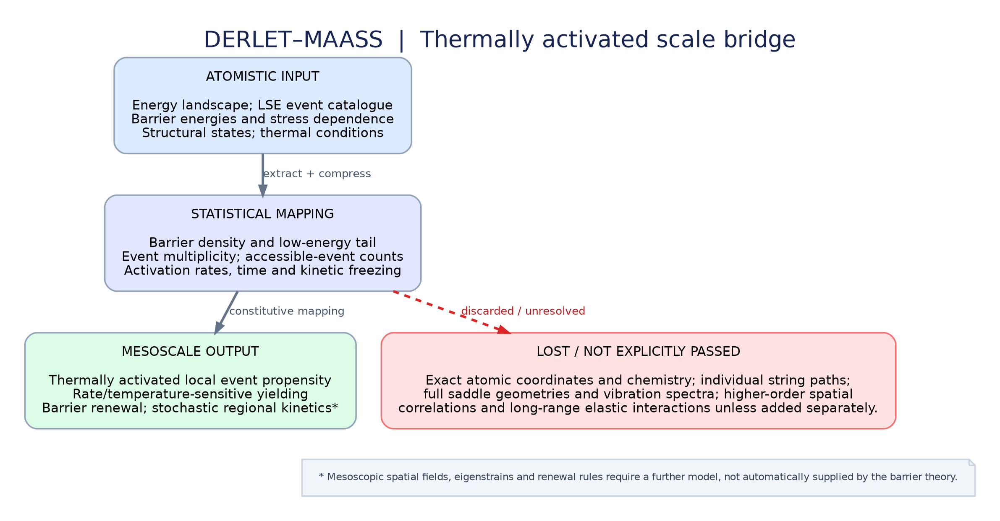
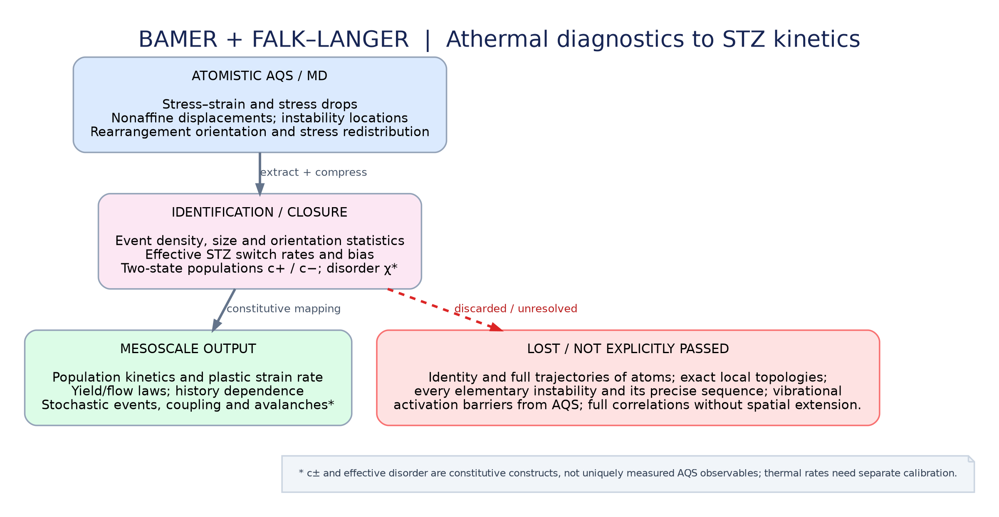
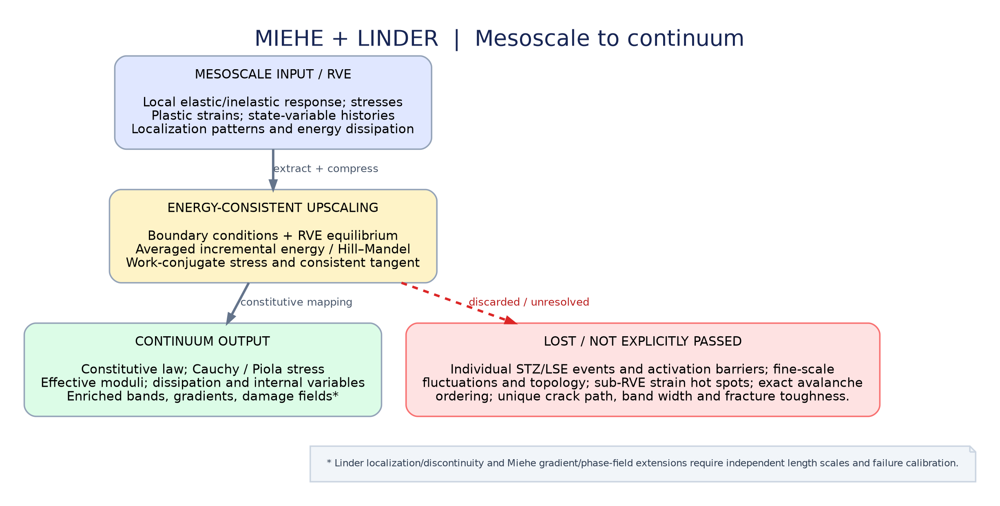
03 / WORK PACKAGES
The proposal is organized as overlapping work packages across 36 months, moving from atomistic foundations to scale transfer, localization, fracture, and validation.
Glass preparation, quench-rate and size tests, LAQs, participation, LSE morphology, and connected ARTn catalogues.
Rates, prefactors, reversibility, full-cell strain, and event-response transfer rules.
Collective plasticity, event interactions, avalanches, and localization precursors.
Work-consistent continuum closure, localization modelling, and a separate fracture law.
Independent validation, uncertainty analysis, reusable software/data, publications, and final synthesis.
04 / FIGURES
Each figure is explained in the context of the proposed mathematical model. Select an image to see it at full resolution, or follow its numbered equation links to the corresponding derivation and notation.
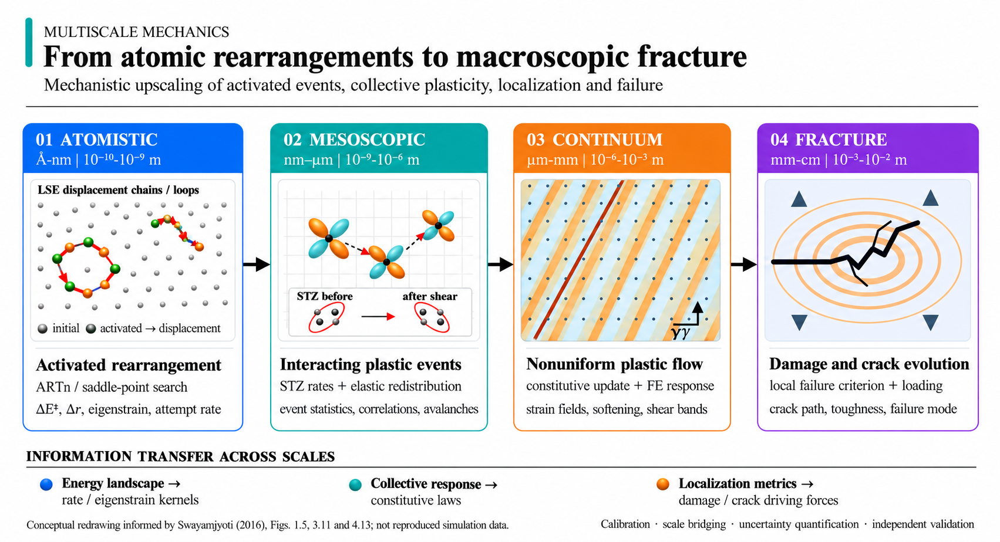
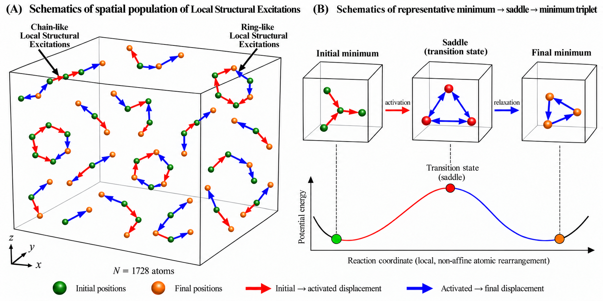
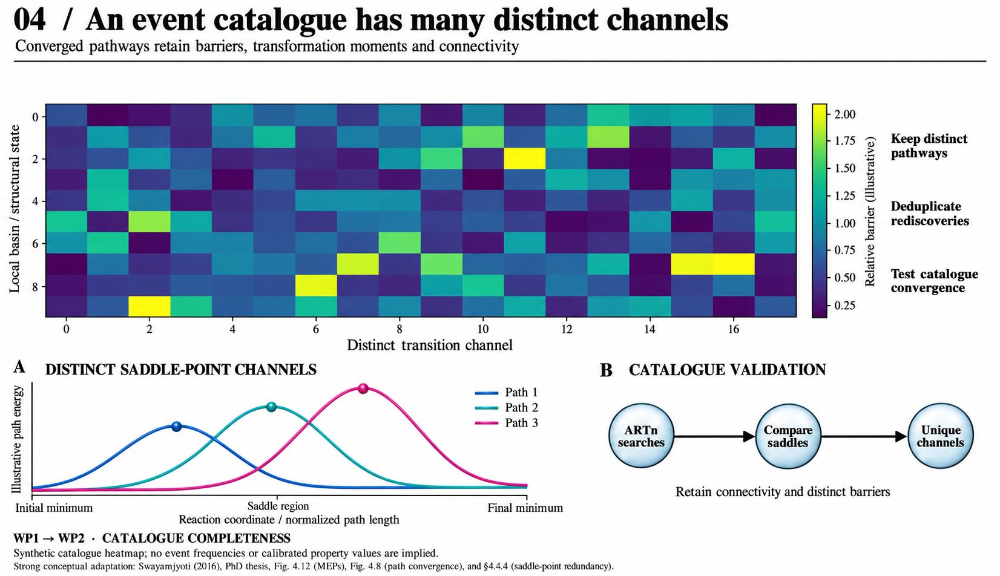
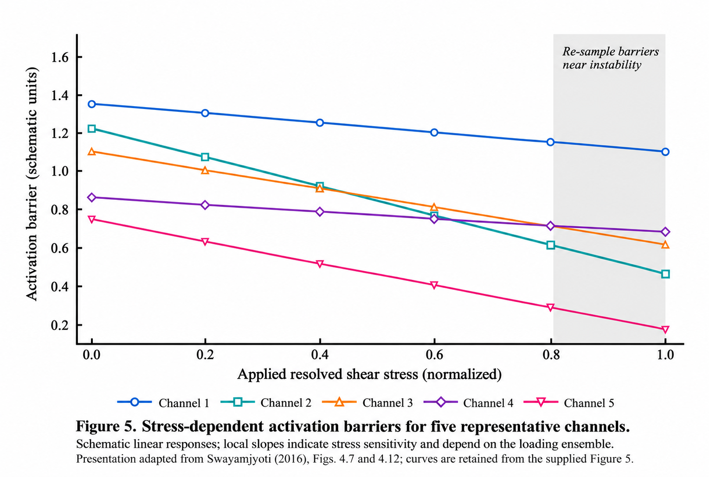
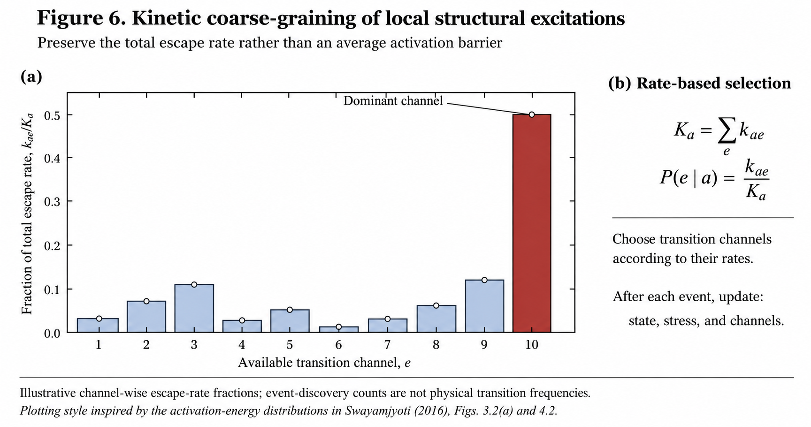
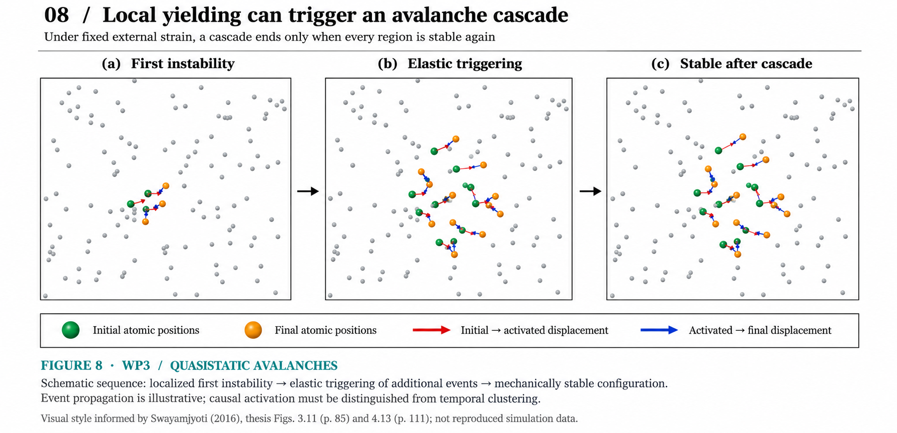
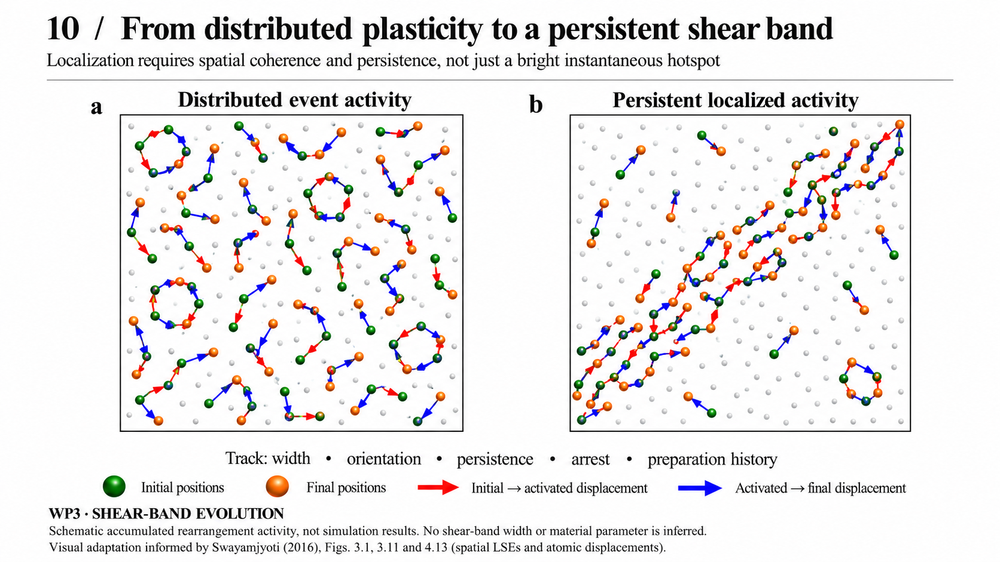
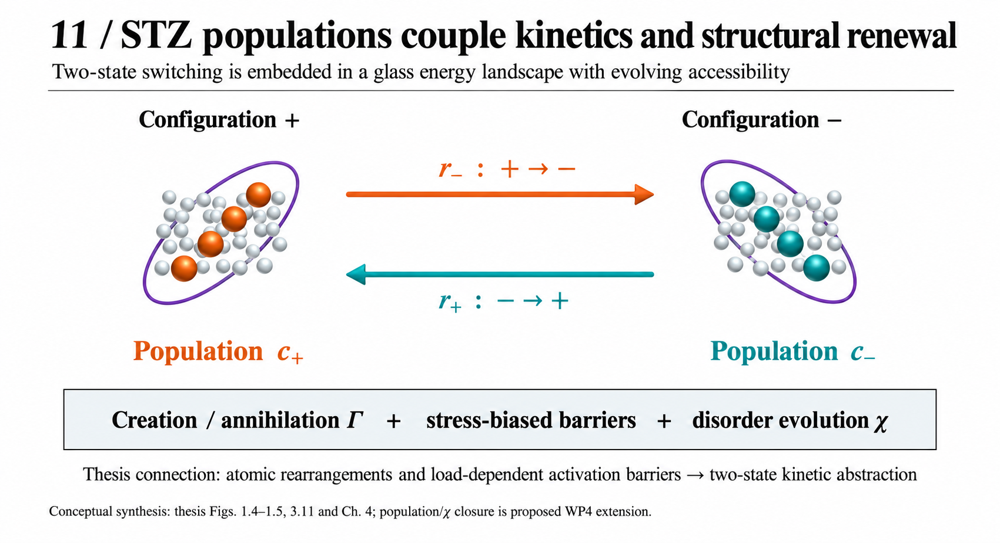
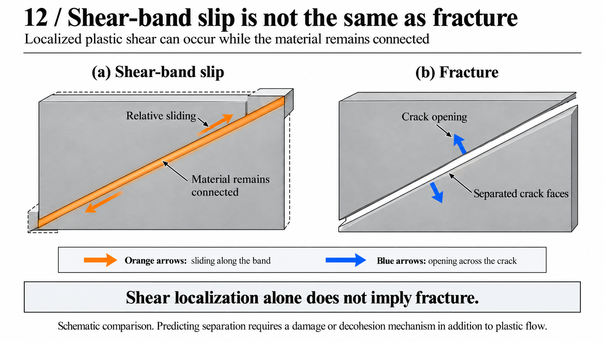
05 / DOWNLOADS
Use these links to download the uploaded proposal archive and editable source files.